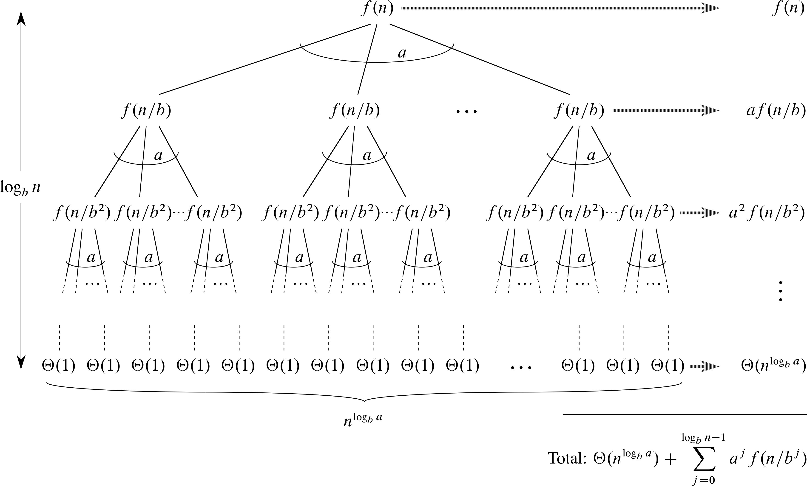
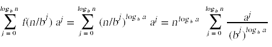
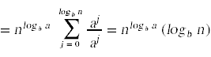

Let a ≥ 1 and b ≥ 1 be constants and let T(n) be defined by the recurrence
T(n) = a T(n/b) + f(n)
Then
If we examine the recursive call tree that corresponds to the recurrence
T(n) = a T(n/b) + f(n)
we can make the following observations.


FIND-MAX-SUBARRAY(A,n)
max_sum = -∞
for i = 1 to n
for j = i to n
sum = 0;
for k = i to j
sum = sum + A[i];
if sum > max_sum
max_sum = sum;
low = i;
high = j;
return (low,high,max_sum)
FIND-MAX-SUBARRAY(A,n)
max_sum = -∞
for i = 1 to n
sum = 0;
for j = i to n
sum = sum + A[j];
if sum > max_sum
max_sum = sum;
low = i;
high = j;
return (low,high,max_sum)
FIND-MAX-CROSSING-SUBARRAY(A,low,mid,high)
left_sum = -∞
sum = 0
for i = mid downto low
sum = sum + A[i]
if sum > left_sum
left_sum = sum
max_left = i
right_sum = -∞
sum = 0
for j = mid + 1 to high
sum = sum + A[j]
if sum > right_sum
right_sum = sum
max_right = j
return (max_left,max_right,left_sum+right_sum)
FIND-MAXIMUM-SUBARRAY(A,low,high)
if high == low
return (low,high,A[low])
else mid = (low+high)/2
(left_low,left_high,left_sum) =
FIND-MAXIMUM-SUBARRAY(A,low,mid)
(right_low,right_high,right_sum) =
FIND-MAXIMUM-SUBARRAY(A,mid,high)
(cross_low,cross_high,cross_sum) =
FIND-MAX-CROSSING-SUBARRAY(A,low,mid,high)
if left_sum >= right_sum and left_sum >= cross_sum
return (left_low,left_high,left_sum)
else if right_sum >= left_sum and right_sum >= cross_sum
return (right_low,right_high,right_sum)
else
return (cross_low,cross_high,cross_sum)